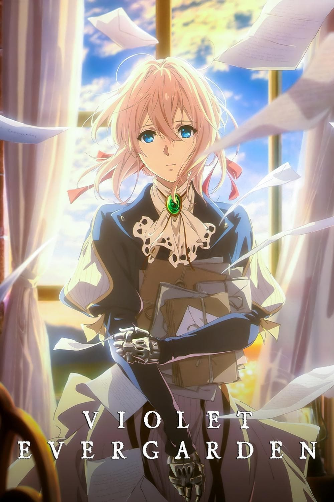
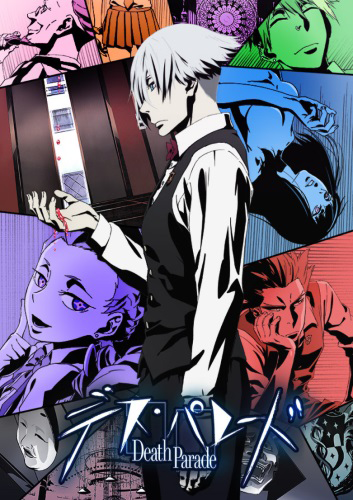
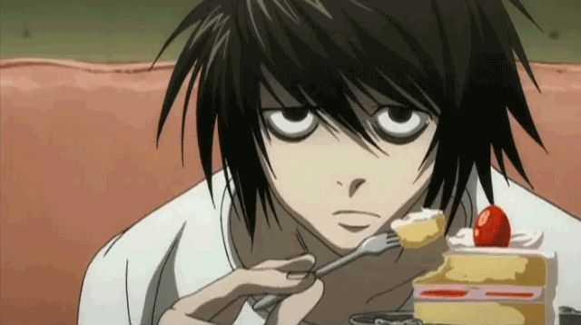
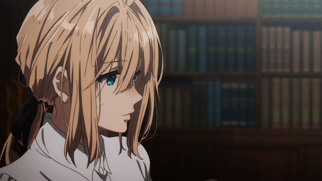
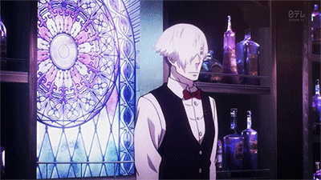

The story follows Light Yagami, a teen genius who discovers a mysterious
notebook: the "Death Note", which belonged to the Shinigami Ryuk, and
grants the user the supernatural ability to kill anyone whose name is
written in its pages. The series centers around Light's subsequent
attempts to use the Death Note to carry out a worldwide massacre of
individuals whom he deems immoral and to create a crime-free society,
using the alias of a god-like vigilante named "Kira", and the subsequent
efforts of an elite Japanese police task force, led by enigmatic detective L,
to apprehend him.
In the aftermath of a great war, Violet Evergarden, a young female ex-soldier,
gets a job at a writers' agency and goes on assignments to create letters that
can connect people. After four long years of conflict, The Great War has finally
come to an end. Caught up in the bloodshed was Violet Evergarden, a young girl
raised to be a deadly weapon on the battlefield. Hospitalized and maimed in a
bloody skirmish during the War's final leg, she was left with only words from
the person she held dearest, but no understanding of their meaning. Recovering
from her wounds, Violet starts a new life working at CH Postal Services. There,
she witnesses by pure chance the work of an "Auto Memory Doll", amanuenses that
transcribe people's thoughts and feelings into words on paper. Moved by the notion,
Violet begins work as an Auto Memory Doll, a trade that will take her on an adventure,
one that will reshape the lives of her clients and hopefully lead to self-discovery.
After death, humans go to either heaven or hell. But for some,
at the instant of their death, they arrive at the Quindecim, a bar attended
by the mysterious white-haired Decim. After death, humans are either reincarnated
or sent to the void.Whenever someone dies, they are sent to one of many mysterious
bars run by bartenders serving as arbiters inside a tower in the afterlife. There,
they must compete in Death Games with their souls on the line, the results of which
reveal what secrets led them to their situation and what their fate will be afterwards,
with the arbiters judging if their souls will either be sent for reincarnation or
banished into the void. The series follows Decim, the lone bartender of the bar where
people who died at the same time are sent to, known as the Quindecim bar, and his
assistant.


